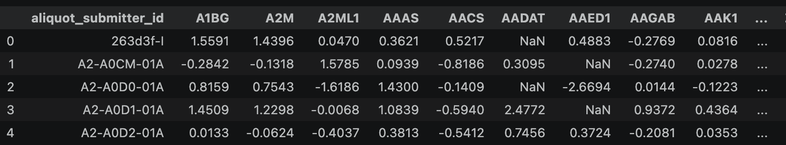
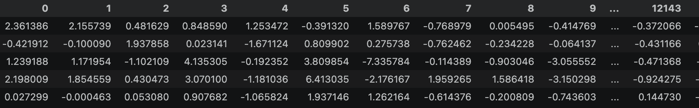
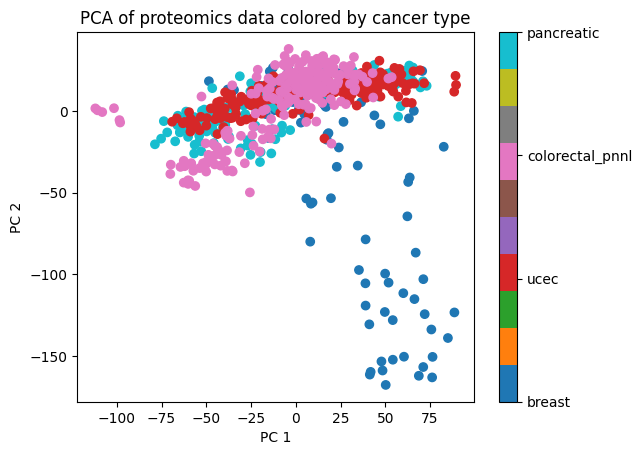
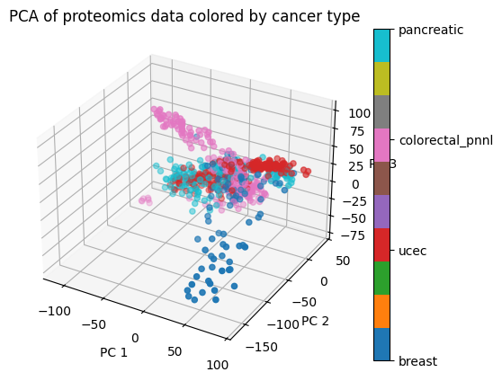
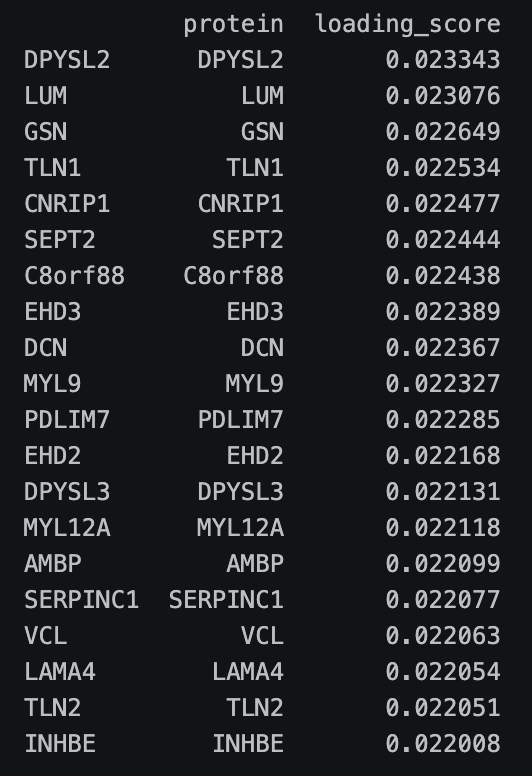

Principal Component Analysis
Overview
PCA is a dimensionality reduction technique that transforms a dataset with a high number of dimensions (i.e. features) into a new, smaller series of aggregate features (the 'principal components') that capture most of the variance that the features contain. The first principal component captures the most variance, the second captures the most of the remaining variance, and so on. This is done by calculating the eigenvectors and eigenvalues of the covariance matrix of the data, and projecting the data into a new coordinate system that thus represents the covariance in the data.Eigenvectors and eigenvalues are special vectors/scalars calculated from a matrix that capture and distill certain properties/information about how the values in the matrix relate to each other; when performing this calculation on a covariance or correlation matrix, it indicates how we could transform the matrix to yield a diagonal matrix; for a covariance matrix, a diagonal matrix (one with all zeros except for the diagonal), this indicates no covariance between the features. So essentially, it is an indication of where in the covariance matrix the variance is captured, by expressing how we would need to transform the matrix to remove the variance. Once we know the directions in which the most variance exists, we can then reproject the data into a new coordinate system defined by only those directions we choose, i.e. how many principal components we want to keep. These become the new reduced set of dimensions. The eigenvectors and eigenvalues are calculated by solving the characteristic equation of the covariance matrix, Ax= λx, where A is the covariance matrix, x is an eigenvector, and λ is the corresponding eigenvalue. Dimensionality reduction can be important in machine learning in many ways. Data that contains many many features can be noisy and have redundant information, which makes it difficult for modeling techniques to distinguish signal from noise, often leading to overfitting and consequently poor generalization performance. Datasets, especially for ML, can be enormous, and computations on matrices often have algorithmic complexity of at least O(n^2), so reducing the number of features can save computational resources (which can be very expensive on high-powered GPUs), or even be needed just to make computation possible on large enough sets. Much cancer data can be high-dimensional, especially proteomic and genomic data (as there are thousands of genes and proteins in the body), which makes PCA a potentially valuable tool. Not only are these datasets portenially enormous on their own, but combining genomic and proteomic data (an emerging field known as "multi-omics") can create even larger datasets. Generally, if the data is high-quality, more samples are better, so dimensionality reduction techniques like PCA become essential to run a model in a reasonable amount of time. Screenshot of a 3-d visual of eigenvector derivation from an excellent 3blue1brown video on eigenvectors and eigenvalues (linked below):


Data Prep
After having merged clinical and proteomics data from the PDC to get a dataset with many features and several cancer subtypes during the prep and EDA process, the data must now be prepared for PCA.
Most importantly, any non-numeric data must be removed, and NaNs must be imputed or removed, and the data must be scaled.
The raw data:
 
Code
The Jupyter notebook with the code can be found on GitHub here. The HTML version is here.
Results
The top 3 components don't actually explain too much variance, PC 1 explains about 12.1%, PC2, 8.78 %, and PC3 7.73%. This is not terribly surprising given the complexity of protein profiles, and the enormous number
of dimensions to reduce from. However, the plots do reveal some clear clustering of the data by cancer type, which suggest that there is promise for classifying cancer type on proteomic profile.
The plot of PC 1 and 2 colored by cancer type is shown below:
  
Conclusions
The PCA shows that even with massive dimenstionality reduction, we can still get a clear signal can cluster by cancer type, which is a positive sign for future classification models. More biologically interesting, we can see the top contributing proteins to the PCA signal, and investigate their biological functions. For example the top contributing protein is 'DPYSL2', 'dihydropyrimidinase like 2', which according to the NIH is "required for Sema3A-mediated growth cone collapse." This turns out to be a process that is more typically involved in tumor suppression, but recent research has identified how Sem3A overexpression actually inhibits immune response (specifically T-cell infiltration), which helps tumors evade immune response. The second most contributing is "LUM", Lumican, which is a connective tissue protein that has been shown to be associated with tumorigenesis and metastasis , and know to be overexpressed in at least some cancers. The complexity of these cellular processes and the fact that the proteins are also involved in normal function highlights the magnitiude of just one of the aspects of cancer biology. Perhaps methods like PCA can help quickly identify proteins to investigate further, highlight interactions that might otherwise be difficult to tease out, and maybe even help elucidate the interactions, or anomalous interactions themselves. In the scope of this project, PCA has shown that there is useful signal for classifying cancer type, and suggested some interesting directions to pursue further research into possible applications of ML to proteomics data.
References
PCA resources: